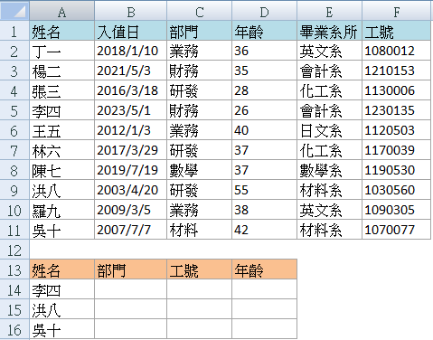
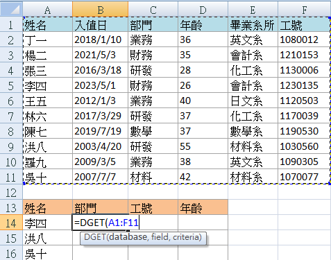
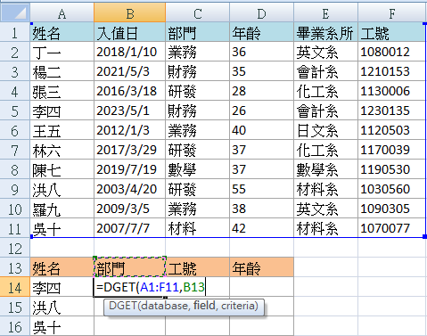
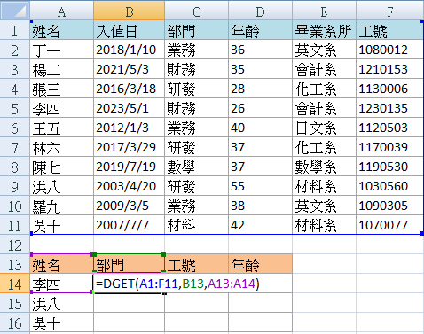
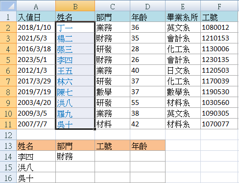
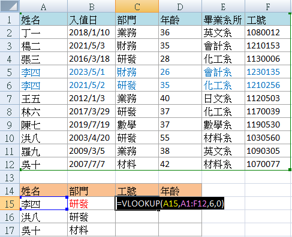
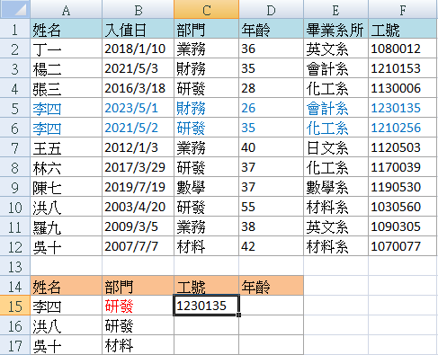

豪拜兒|Excel教學：DGET函數—超越VLOOKUP的強大數據查找功能

在之前的文章中，我們已經介紹了 VLOOKUP 函數在查找數據方面的強大功能。這個函數能夠根據指定的查找值，從資料表中快速找到對應的數據，對於處理大量數據來說，無疑是個非常實用的工具。然而，VLOOKUP 也有它的限制，比如它只能在查找目標位於第一欄的情況下工作，而且無法直接處理多條件查找的需求。如果你經常使用 Excel 進行數據管理，這些限制可能會讓你感到困擾。
今天，我們將介紹一個傳說中比 VLOOKUP 更強大的函數——DGET 函數。這個函數不僅能克服 VLOOKUP 的限制，還能提供更靈活的查找功能。無論是查找目標在範圍的任意位置，還是需要同時滿足多個條件，DGET 函數都能輕鬆應對。本文將詳細講解 DGET 函數的語法和使用方法，並通過具體的例子展示其強大的數據查找功能。
如果你曾經遇到過因為 VLOOKUP 的限制而感到困擾的情況，那麼這篇文章將是你提升 Excel 技能的一個好機會。讓我們一起來學習如何使用 DGET 函數，從而更高效地處理數據查找需求。
DGET 函數的語法如下：
DGET(database, field, criteria)- database：要查找數據的範圍，包括列標題和數據。
- field：要查找的欄位名稱，可以是欄位標題或列索引。
- criteria：要查找的目標值，這邊記得要把標題也框起來。
以下是之前在 VLOOKUP 篇出現過的範例，我們改用 DGET 再做一次。
假設老闆要我們從公司上百人的員工資料中，挑出少數人的部門、工號、年齡資訊，該怎麼做呢？用以下表格進行說明，假設我們要在藍色表單中查找資料，然後將資料呈現於杏色表單，也就是說，我們要從眾多資料中，快速歸結出李四、洪八、吳十的部門、工號、年齡資訊。

操作步驟
在 B14 儲存格開始公式的輸入：
=DGET(A1:F11, B13, A13:A14)
這裡第一個參數是要查找的範圍 A1:F11，第二個參數是要查找的欄位名稱 B13，第三個參數是查找的標準 A13:A14。
查找的範圍 A1:F11

查找的欄位名稱 B13

查找的標準 A13:A14
公式輸入完畢後按 Enter，會顯示 “財務”，表示查找成功。

VLOOKUP 的限制
VLOOKUP 函數有一個限制：查找目標必須在第一欄。例如，如果我們的查找目標是姓名，必須讓藍色表格的姓名欄在框選範圍的第一欄。但 DGET 函數不受此限制，即使姓名欄被移到第二欄，DGET 函數依然可以執行查找。

多條件查找
DGET 函數也可以實現多條件的查找。假設 “李四” 是個大眾名，公司同時有兩位李四，但隸屬於不同部門，我們要怎麼搜索到正確李四的資料呢？
用 VLOOKUP 函數查找 (結果錯誤)
用 VLOOKUP函數查找"研發部門" 李四的工號資料：
會返回 “1230135”，這不是 “研發部門” 李四的工號。VLOOKUP 由上而下依序查找，返回了先找到的 “財務部門” 李四的資料。
=VLOOKUP(A15, A1:F12, 6, 0)

用DGET 的多條件查找 (結果正確)
換用 DGET 函數試試看，操作步驟如下：
=DGET(A1:F12, C14, A14:B15)
這裡查找的範圍是 A1:F12，指定查找欄位是 “C14 工號”。搜尋的標準需滿足多條件 A14:B15，姓名是 “李四”，且屬於研發部門。按下 Enter，返回的值是 “1210256”，正確地查找到了研發部門李四的工號。

小結
DGET 函數比 VLOOKUP 函數更靈活，特別是在多條件查找和非第一列查找方面更具優勢。希望小夥伴們能對這兩個函數都熟悉一番，充分利用它們來提高工作效率！
為什麼需要學習 Excel？難道不可以依賴 AI 工具嗎？
過去，學習 Excel 不僅能提升數據處理和分析能力，還能顯著提高工作效率。掌握各種 Excel 公式和 VBA 技巧，可以有效提升工作效率，通過自動化功能減少重複性工作。此外，熟練掌握 Excel 也能增加就業競爭力，因為許多職位，尤其是在財務、數據分析和行政等領域，都將其視為基本要求。
隨著 AI 技術的問世，與 AI 工具合作的情況下，我們可能不再需要從零開始編寫公式或 VBA 程式。例如，免費版的 ChatGPT-3.5 能生成和解釋 Excel 中的常見公式，如 SUM、VLOOKUP、IF 等，並幫助解決基本的數據處理問題。付費版的 ChatGPT-4.0 在公式生成和解釋方面同樣出色，能更好地處理複雜的公式和多步驟的數據分析任務，並提供更精確的幫助，還能協助生成各類型的圖表。
然而，對於 Excel 完全不熟悉的人，仍然難以與 AI 有效溝通並驗證結果。因此，小編認為，為了更好地與 AI 協作，對 Excel 的基本了解仍然是必要的。建議可以參考以下Hahow學習資源：
為什麼選擇 Hahow 線上課程平台？
Hahow 是一個受歡迎的線上課程平台，提供各種專業課程。選擇 Hahow，可以享受靈活的學習方式，隨時隨地都可以學習，非常適合忙碌的工作人士。平台上的課程由專業講師授課，內容豐富且實用。還可以與其他學員交流學習心得，共同進步。相比坊間動輒上萬元的課程，Hahow 的線上課程不僅省去交通的舟車勞頓，更有價格實惠的絕對優勢。
更多文章
想要更深入了解Excel的習性和如何照顧牠們嗎？請點擊以下連結閱讀更多相關文章。點我前往更多文章